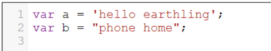
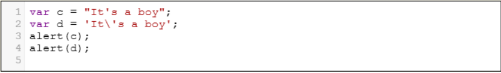
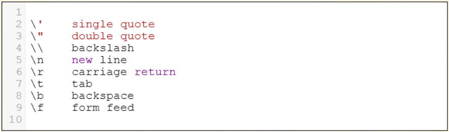

Strings and Arrays in Javascript
Strings and Arrays
Strings
We declare strings by using either single or double quotes. 

Notice that the operator '+' concatenates strings.
What do you think lastIndexOf returns? Try it in the code below.

It is said that a monkey, given a typewriter and enough time, will eventually type out the works of William Shakespeare. We are going to simulate that monkey. Since our monkey can't yet type we will give it a bag of letters to pick from. The monkey reaches into the bag and picks out letters one by one.
The 'target' is the phrase we want the monkey to type. The 'start' is the string of letters in the bag - from this we create the array 'bag' full of the letters. Once a letter is picked we remove it by making it 'null' in the array.
Change the code in 'removeFromBag(bag, index)' so you actually remove the letter from the array 'bag' so that the length of 'bag' is now smaller.. You will also have to change 'getRandomLetter(bag)' since the size of the array 'bag' has now changed. Once you have it working see how long it takes the monkey to produce the phrase 'to be or not'. What is the increased complexity of the problem for the monkey to produce the phrase 'to be or not to be'?